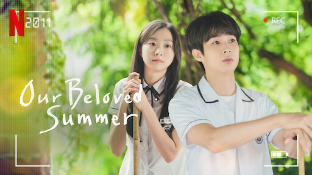
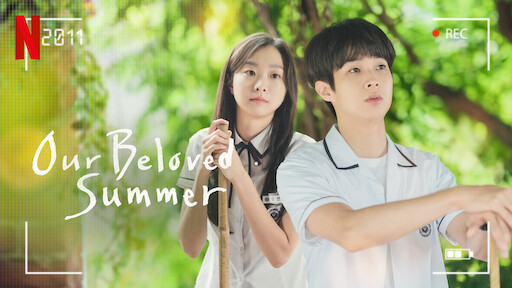

Thanks to Netflix, global audiences have gained access to K-dramas, which has led to the creation of the incredibly popular Squid Game and The Glory. “Hallyu,” which means “Korean Wave,” is a Chinese term widely used to describe the spread of South Korean culture throughout the world. With the popularity of BTS and director Bong Joon Ho, the globalization of Korean entertainment, celebrities, food, and even skincare, have reached new places and gained interest from a diversity of people. With the continuous releases of popular K-dramas, K-dramas are making a name for themselves as a part of the Korean Wave.
Not only did Netflix become a platform for Korean content to be shared globally, it also provided greater freedom to touch on a variety of topics that previously weren't allowed in K-dramas. "In a country where traditional broadcasters still censor smoking, Netflix is among the platforms that have opened a path to delve into topics that have long been considered too risqué," said Yu Kon-shik, an adjunct professor of communications at Konkuk University and part of the production planning committee at KBS.
Dong Kang, Netflix's vice president of content for Korea, believes that the global success of Korean productions demonstrates the international reach of Netflix — which can subtitle or dub shows in more than 30 languages — but also of the growing power of Seoul as a creative hub. “Korea is a storytelling powerhouse with the ability to showcase uniquely Korean culture and issues,” he said, “while conveying universal emotions that resonate with people around the world.”
What makes K-dramas so popular is because the themes of these dramas are universally understood. K-dramas explore emotions unique to Korean culture while also overcoming cultural boundaries. You don't necessarily have to be Korean to enjoy these stories, as the dramas engage in themes everyone can relate to. Audiences can connect with the characters and empathize with the emotions K-dramas are always exploring.
Just last April, Ted Sarandos, the co-CEO of Netflix, met with South Korean president Yoon Suk Yeol and announced a $2.5 billion investment in South Korean content over the next four years. "It is incredible that the love towards Korean shows has led to a wider interest in Korea, thanks to the Korean creators' compelling stories," said Sarandos. He noted that stories created in the country "are now at the heart of the global cultural zeitgeist."
Top 4 K-Dramas Worldwide
These four K-dramas are among Netflix's top 10 most-watched non-English Netflix series of all time. Of course, ranking 1st is Squid Game with a staggering 1,650,450,000 hours watched. The K-drama "All of Us Are Dead" ranks 4th in the charts, proving to be the second-most popular South Korea Netflix series of all time. Right behind that, the revenge-themed K-drama "The Glory" ranked 5th despite its recent release. Rank 7th is the K-drama "Extraordinary Attorney Woo," a show that has been praised for the way it depicts autism. With the success of these four K-dramas, Netflix has seen an opportunity in the worldwide popularity of Korean content.


Korean Content 2023
The global fandom for K-content is continuing to grow, with over 60 percent of all Netflix members watching Korean titles last year. In 2023, Netflix is debuting a diverse array of Korean TV series, films and unscripted shows.

Top 10 K-Dramas of 2022
2020 and 2021 were genuinely magical years for the South Korean entertainment industry, with successes abroad on online-streaming platforms such as Netflix. Naturally, with Covid-19 prompting social distancing and staying home, people started binge-watching series and films online. Thus, while the virus affected people worldwide, it provided Netflix and Korean content makers with a window of opportunity.
Between 2019 and 2021, K-dramas have seen a 200% spike in viewership numbers and as it stands, K-dramas are an overwhelming force in television today that will only continue to grow.
For its part, Netflix has been funneling money into Korean content for years, recently upping the ante with an investment approaching $500 million in 2021 and, reportedly, an even larger sum this year. That investment has paid off with big hits like “Squid Game,” which became Netflix’s most successful series launch of all time; “My Name”; and “Hellbound,” among others.
“Squid Game” is officially the most-watched series ever on Netflix, with 95 percent of its viewership outside Korea. It became the golden gatekeeper to the Korean entertainment industry, and because of the series, many went on to explore other Korean content. This chart shows the most popular Netflix TV shows of all time.
 

Korean Movies
The past year has seen Korean movies and unscripted shows becoming increasingly popular with global audiences. Action thriller "Carter" was one of the top 10 most-watched non-English films last year, while dating reality show "Singles Inferno" is currently sitting in the Global Non-English Top 10.
As interest in K-dramas grew, other forms of Korean TV have been brought to Netflix, such as reality shows and documentaries.
Korean Reality Shows and Documentaries